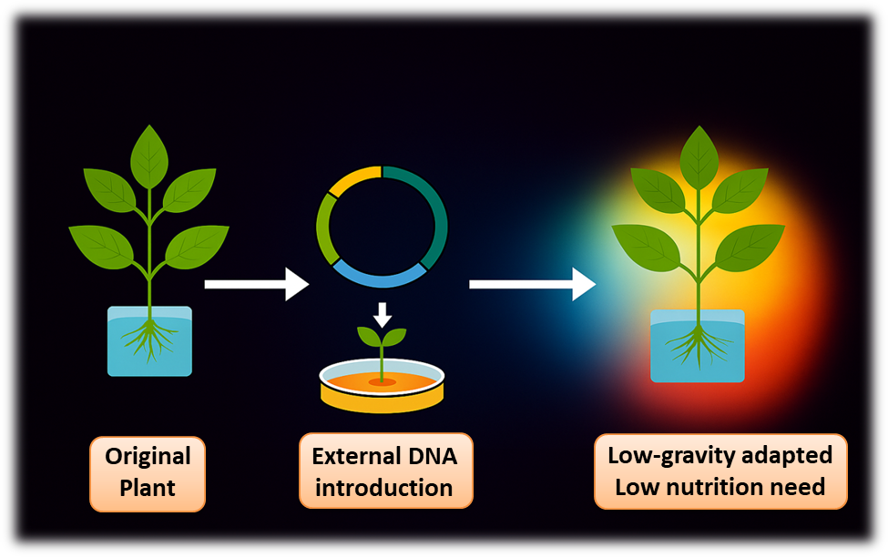

Plants do not grow normally in low gravity because their roots, water movement, and stress responses get confused. To fix this, the project suggests genetically modifying plants so they can handle the Moon’s 1/6 gravity. Scientists would modify genes related to stress resistance, water use, and gravity sensing. This would help plants grow more reliably and avoid dying early.
Other options include conventional breeding or relying only on controlled environments. Conventional breeding takes many generations and is unpredictable, which is too slow for space missions. Controlled environments help with temperature and humidity but cannot fix the biological problems caused by low gravity. Genetic modification is better because it directly changes the plant’s biology, making it faster and more effective for space farming.